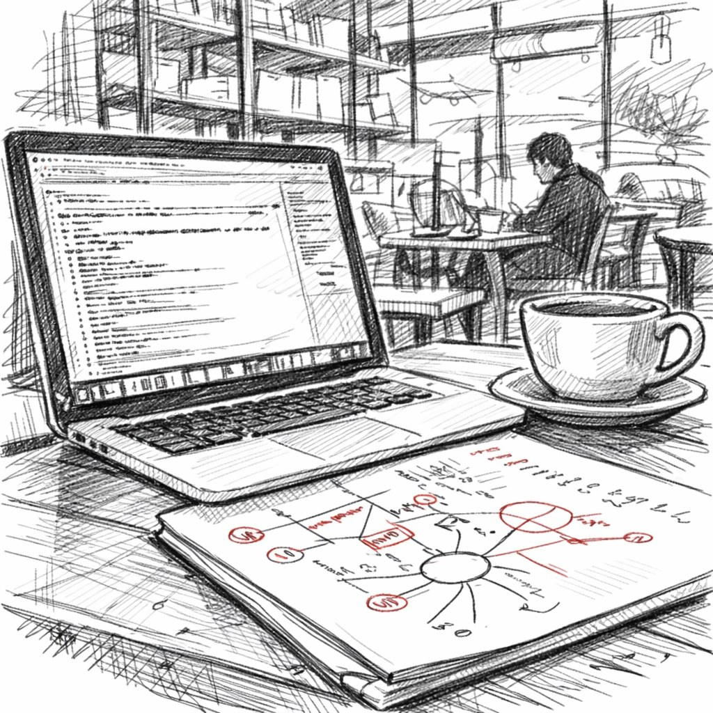

Appartengo a quella generazione di sviluppatori in via di lenta estinzione a cui è toccato lo strano privilegio di scrivere il codice dei programmi nella sua forma più pura e primordiale — creando ogni riga a mano, con le proprie mani e la propria testa, senza alcun intelligente assistente copilot, senza prompt, senza autocompletamento che presumibilmente sa meglio di te cosa vuoi scrivere. Nuda logica algoritmica, litri di caffè bevuti e un cursore lampeggiante in un file vuoto di un IDE aperto, quando il cervello cerca di tenere l'intera architettura del sistema tutta insieme nella sua «RAM».
E sono sinceramente felice di aver vissuto a suo tempo questa esperienza, di aver colto quell'epoca in cui programmare era ancora un vero mestiere e non la gestione di generatori automatici di codice. In quei tempi recentissimi, che ormai sembrano già una favola di mammut, scrivevo codice di continuo: in ufficio, a casa, quando ero sotto stress per una grande release, quando ero felice per aver risolto un problema difficile, a volte nei sogni continuavo a fare debug di qualcosa e a dare la caccia ai bug.
Lo facevo non perché qualcuno mi obbligasse o perché i capi lo pretendessero, ma semplicemente perché il processo stesso di creare un sistema funzionante dal nulla, di aggiustare bug insidiosi, di costruire sistemi complessi a partire da componenti semplici — tutto questo era genuinamente divertente, portava una sorta di piacere infantile della creazione. Quando finalmente ti appoggi allo schienale della sedia allontanandoti dal monitor dopo molte ore di lavoro, guardi ciò che hai costruito con le tue mani, e vedi che tutto funziona come previsto, e pensi: «Sì, sono un dannato genio, ho fatto tutto questo da solo, e nessuno mi ha aiutato». Beh, tranne SO e un po' di googling.
Ancora cinque anni fa non potevi semplicemente assemblare meccanicamente componenti software già pronti presi dalle librerie in un unico sistema; dovevi sempre tenere in testa il modello mentale e l'architettura, mantenere in memoria tutte le interconnessioni tra i moduli ed elaborare i casi limite prima che si presentassero nella pratica, simulare vari scenari di guasto prima che la produzione riuscisse a sorprenderti spiacevolmente alle tre di notte.
E ogni bug difficile risolto mi rendeva un po' più esperto, un po' più intelligente, un po' più bravo a capire come tutto funziona all'interno — si scopre che non stavo semplicemente scrivendo l'ennesimo pezzo di codice su commissione, ma lo forgiavo nella fucina della mia mente, mettendo un pezzo di me stesso in ogni colpo di martello.
Ricordo bene come integrai una sandbox ECMA per l'hot-reload delle config in uno dei nostri progetti, perché le capacità del C++ non bastavano, e dovetti riscrivere sia il progetto sia la sandbox stessa — ed è stato difficile, ne ero sinceramente orgoglioso come di un'opera d'arte ingegneristica. E questo sistema è ancora in uso dieci anni dopo, e ho di che essere orgoglioso, semplicemente perché ho costruito qualcosa di davvero difficile ed elegante al tempo stesso, e c'è quella sincera soddisfazione creativa per i risultati del proprio lavoro che è molto difficile fingere o simulare di proposito.
E ora facciamo un salto in avanti fino a oggi, alla nostra epoca in cui l'AI viene ficcata ovunque, dove serve e dove non serve. Negli ultimi mesi di lavoro attivo con gli assistenti AI ho prodotto (non scritto), generato più codice di quanto ne scrivessi a mano in un intero anno di lavoro o anche di più. Formalmente le metriche dei miei commit mostrano una grande crescita, e il mio management di dieci anni fa mi avrebbe semplicemente portato in trionfo per numeri del genere, ma dentro vedo che qualcosa sta andando storto, che qualcosa di importante si è perso in questo processo di come scrivo codice. Una strana sensazione che tutto questo codice sia stato costruito non da me personalmente con le mie mani e la mia testa, ma da un programmatore astratto assunto in outstaff. Sì, formalmente lo revisiono tutto riga per riga, lo leggo con attenzione, ne rifinisco i dettagli, correggo le imprecisioni.
Sì, capisco a grandi linee cosa succede negli algoritmi, perché sono seduto su questo progetto da più di un anno, ma tutto questo codice non è nato da quel profondo lavoro cognitivo e da quella lotta interiore con il problema che rendevano il processo di programmazione così creativo. Ora è come guardare i videogiochi su YouTube, quando qualcun altro affronta al posto tuo tutta la parte difficile, batte il boss finale dopo una dozzina di tentativi e salva la principessa dalla prigionia, mentre tu te ne stai seduto lì accanto e fissi il monitor.
Puoi persino ottenere i titoli di coda con i ringraziamenti alla fine e un record di vittoria nel tuo profilo, e persino il tuo nome scritto nella tabella dei punteggi migliori... ma non hai giocato tu, non hai provato l'emozione, non hai vissuto le sconfitte né gioito per la vittoria. Ed è qui che sta il paradosso principale: quando il processo di creare qualcosa diventa troppo facile e veloce grazie all'automazione, il traguardo stesso del risultato finale comincia a sembrare imponderabile, irreale, privo del valore che aveva prima.
C'è un altro importante effetto collaterale dell'uso di massa dell'AI nel coding di cui nessuno parla alle conferenze e negli articoli. Quel famoso stato di flusso, di concentrazione profonda, su cui sono stati scritti decine di libri sulla psicologia della creatività — prima arrivava da solo nel processo di scrittura di sistemi software complessi. Potevi sparire, cadere per molte ore di fila in quel flusso, immergerti completamente nella costruzione della logica, nel debug dei casi limite, nel rifinire i dettagli, e il tempo cessava di esistere; spesso mi dimenticavo di mangiare e una seconda tazza di caffè si raffreddava accanto alla prima non bevuta, mentre fuori era già calato il buio.
E ora basta descrivere brevemente all'AI in testo cosa esattamente vuoi in output e aspettare mentre il modello genera la risposta, distraendoti inevitabilmente con qualcosa di estraneo, perché al cervello non piace girare a vuoto, controllando contemporaneamente i messaggi su Telegram o scorrendo distrattamente il feed. Quando battevo tutto il codice sulla tastiera con le mie dita, il cervello e le mani erano sincronizzati tra loro; la lotta fisica stessa con il problema, il superamento delle difficoltà e l'implementazione codificavano gradualmente, registravano l'intero sistema in profondità nella sottocorteccia, nella memoria a lungo termine, in una comprensione del dominio. L'AI rimuove tutto questo attrito utile dal processo di sviluppo, ma è proprio questo attrito, questa lotta con la materia, che era il principale meccanismo di codifica profonda della conoscenza in un programmatore, di trasformazione dell'informazione in comprensione ed esperienza.
Ed ecco cosa è stata per me una vera sorpresa, cosa non mi aspettavo affatto di scoprire: il processo stesso di battere il codice sulla tastiera era piacevole a modo suo, dava una sorta di piacere tattile. Tastiere diverse con corse dei tasti o click diversi influenzavano in modo diverso il processo di costruzione della logica di gioco nel programma; il semplice ritmo fisico del processo di pensiero stesso, trasmesso attraverso i movimenti delle mani, influenzava la velocità con cui risolvevo un problema. Ora è molto più facile descrivere in astratto il risultato desiderato invece di costruirlo tu stesso passo dopo passo a partire da mattoncini elementari, ma descrivere l'obiettivo finale a parole non è affatto la stessa cosa che costruire tu stesso il percorso verso di esso. Ed è proprio nel processo di costruzione, nel superamento delle difficoltà, che viveva tutta la gioia della creatività, tutto lo sballo del lavoro del programmatore.
E qualche settimana fa, qualcosa si è di nuovo rotto nella nostra produzione a causa delle ultime modifiche fatte con l'aiuto dell'AI. Il vecchio me, che scriveva tutto da solo, avrebbe saputo intuitivamente ed esattamente in quale punto del codice cercare questo tipo di errore, e come risolvere il problema rapidamente con modifiche minime. Ma questo codice non era stato scritto da me, e non era nemmeno stato scritto da un programmatore, e ho dovuto letteralmente rileggere l'intero sistema software riga per riga da zero, ed era codice del tutto estraneo, non nel nostro code style, senza la nostra review (è una questione a parte come il codice sia passato attraverso la review), scritto da una «persona» sconosciuta dall'altra parte del mondo. E la consapevolezza di quel fatto mi ha colpito psicologicamente molto più duramente del bug tecnico in sé e delle sue conseguenze per i giocatori.
Quando il codice scritto personalmente con le proprie mani dopo lunga riflessione all'improvviso va in crash con un errore in produzione sotto carico, il tuo cervello ha da tempo una mappa mentale dettagliata dell'intero sistema, un modello dettagliato dell'architettura. Puoi orientarti rapidamente, capire cosa esattamente è andato storto, e riuscire a fare il debug del codice quasi intuitivamente, con il pilota automatico, ricordando fisicamente dov'è il problema, perché l'intera codebase è passata una volta attraverso il tuo cervello nel processo di creazione, non solo attraverso i tuoi occhi durante una review superficiale. Questo codice ha dovuto essere simulato mentalmente in scenari diversi, combattuto durante il debug, hai letteralmente vissuto dentro questo sistema per un po' e pensato nelle sue categorie. E ora, se qualcosa si rompe in codice creato con l'aiuto dell'AI, devi andare a leggere riga per riga, non perché all'improvviso hai dimenticato come programmare o sei diventato più stupido, ma semplicemente perché non hai assorbito questo codice abbastanza in profondità dentro di te durante la sua creazione.
C'è una differenza cognitiva fondamentale, un enorme abisso tra tre cose diverse: scrivere tu stesso il codice da zero, spendendovi sforzo mentale; revisionare con attenzione codice estraneo già pronto in cerca di errori; e semplicemente capire a grandi linee cosa fa il codice a una lettura rapida. E noi ora ci stiamo spostando dalla prima variante verso la terza in questo spettro, e questo spostamento fondamentale nel modo di lavorare cambia radicalmente la profondità con cui la conoscenza professionale diventa parte di te stesso.
Non mi sto lamentando ora del destino né sgridando il progresso, sto solo osservando dall'esterno e registrando i cambiamenti che avvengono, cercando di dargli un senso. Non sono affatto contrario all'esistenza e all'uso dell'AI nel lavoro, sarebbe stupido e inutile. Ho assistito alla fioritura della programmazione classica, forse non l'età dell'oro del codice degli anni '90, ma anche a me è toccato il privilegio storico di scrivere programmi a mano nella forma più pura di questo mestiere, senza alcun assistente né stampella, e sono sinceramente felice di essere riuscito ad attraversare questa esperienza, di averla nel mio bagaglio. Ora vedo e capisco al tempo stesso dove tutto questo si sta muovendo in seguito.
Gli assistenti AI nella programmazione non andranno da nessuna parte e non spariranno, per quanto qualcuno vi si opponga. Continueranno solo a migliorare ogni mese, a generare codice più velocemente, a diventare più autonomi nella risoluzione dei problemi, a richiedere sempre meno partecipazione umana nel processo. Ma al tempo stesso le regole stesse del gioco nella professione del programmatore sono cambiate radicalmente letteralmente in un paio d'anni, e forse il nostro nuovo ruolo in questo mondo cambiato non è più quello di battere codice più velocemente di concorrenti e colleghi, di essere i più produttivi per numero di righe al giorno.
Forse la vera maestria del programmatore sta ora in qualcos'altro — nella capacità di progettare l'architettura di sistemi complessi a un alto livello di astrazione meglio degli altri, di porre domande precise sui requisiti, di progettare sistemi più profondi e più ponderati che tengano conto del futuro scaling, di comprendere più chiaramente gli inevitabili compromessi tra le diverse qualità di un sistema, di possedere davvero le decisioni architetturali che vengono prese a livello di comprensione profonda anziché possedere semplicemente le specifiche righe di codice che possono essere riscritte in qualsiasi momento.
La maestria professionale del programmatore si evolve insieme agli strumenti, e questo è un processo normale, ma bisogna affrontare questa evoluzione in modo consapevole, capendo cosa perdiamo e cosa guadagniamo nel processo, perché se abbandoniamo completamente e incondizionatamente la costruzione manuale dei sistemi, delegando tutto a qualcun altro, potremmo in modo del tutto accidentale e impercettibile abbandonare anche quella stessa gioia di costruire, quel piacere della creazione che rendeva la professione attraente per le persone creative anziché essere solo un modo per guadagnarsi da vivere.
Questo momento di transizione nella programmazione mi sembra scomodo e fonte di ansia proprio perché mi trovo esattamente nel mezzo di un'era di transizione tra due paradigmi di lavoro. Gli sviluppatori della mia generazione che hanno scritto assolutamente tutto a mano per molti anni di fila vedono anche questo spostamento nella professione in modo più acuto e doloroso di tutti gli altri. A volte mi sorprendo con lo strano pensiero di suonare già come un vecchio brontolone che racconta ai giovani noiose storie sui «bei vecchi tempi» della programmazione, quando scrivevamo codice fino alle due di notte solo per il piacere del processo. La nuova generazione, che sta crescendo già con gli assistenti AI, forse non proverà mai in vita sua quello stesso senso di soddisfazione nel costruire un sistema a mano, ma molto probabilmente proverà una qualche altra soddisfazione tutta sua nel lavorare a un livello di astrazione più alto.
Sto cercando di capire da solo come usare efficacemente questi nuovi strumenti senza perdere me stesso come specialista e, nel processo di trasformazione, trasformarmi in un mero operatore di sistemi altrui. Continuo a scrivere la maggior parte del codice a mano, non solo perché il mio contratto mi vieta esplicitamente di usare l'AI per il coding, ma perché mi piace scrivere codice con le mie mani e la mia testa. Ma l'azienda ha già aperto l'accesso all'AI per l'analisi dei bug e la review dei commit in arrivo.
← Tutti gli articoli